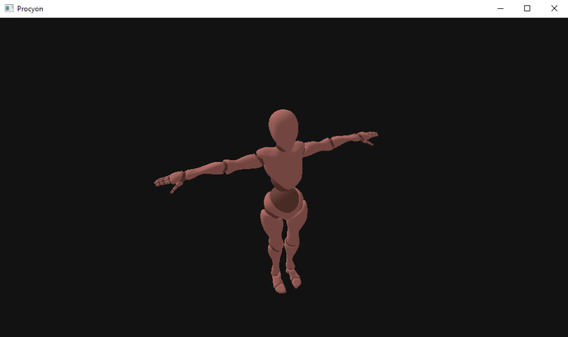
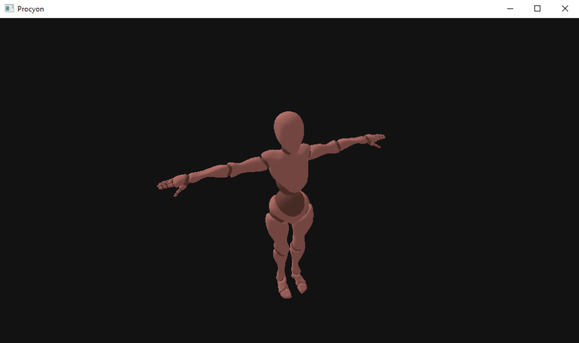

This is my current ongoing project in which I am trying to create a Co-Op Action-Adventure game for PC and PlayStation Portable. Why the PSP? Well, it was my first childhood console and also the reason I have started learning low-level programming in the first place.
TODO
I theoretically should be done with models already but I was curious how taxing is it on the PSP. I've created a simple scene with 16 animated models, measured the time spent on the game loop and it took... 53 miliseconds. Yeah, with only 16 models our performance drops to 18 FPS. This was a bit of a shock to me, I knew that the model used for tests is quite complex (981 vertices, 4368 indices, 32 bones) but I still expected better than that, something really had to be done.
I've started with placing more probes into the code to measure how much each rendering stage took:
REGION TOTAL COUNT AVERAGE
game loop 53.486 1 53.4860
model draw 10.996 16 0.6873
concatenate animation joints 1.535 16 0.0959
calculate matrices 2.107 16 0.1317
assign matrices 3.448 64 0.0539
issue draw command 1.024 64 0.0160
GPU rendering 42.305 1 42.3050
It is clear that the majority of our frame time is spent waiting for the GPU to finish rendering so my first idea was that it is either skinning that is expensive and takes time or the sheer amount of data is slowing everything down. I've started with reducing the size of vertex elements but unfortunately it didn't help at all, I think it even worsen the GPU rendering time by a negligable amount - maybe the values have to be converted back to float before use? My only option then is to try an optimize the skinning. If you remember post #5 the way we are currently dealing with bones is that we split up the 32 bone skeleton into 4 smaller ones with 8 bones each. This works but what bothers me is that we never actually use 8 bones to render anything - most parts of the models would only have 1-3 bone weights with remaining ones being zeroes:
BONE WEIGHTS | UV | NORMAL | POSITION
1 0 0 0 0 0 0 0 | .. | .. | ..
.7 .3 0 0 0 0 0 0 | .. | .. | ..
.. .. .. ..
0 0 0 0 0 .1 .3 .6 | .. | .. | ..
0 0 0 0 0 0 0 1 | .. | .. | ..
So my next idea was that instead of trying to pack the bones into as few groups as possible I would instead create a separate group for each bone combination found in the model. This increased the number of groups from 4 to 16, but there was no unnecessary padding of bone weights anymore and it indeed improved the performance:
REGION TOTAL COUNT AVERAGE DIFFERENCE
game loop 31.900 1 31.9000 -21.586
model draw 19.384 16 1.2115 + 8.388
concatenate animation joints 1.598 16 0.0999
calculate matrices 2.115 16 0.1322
assign matrices 5.180 256 0.0202 + 1.732
issue draw command 3.604 256 0.0141 + 2.580
GPU rendering 12.330 1 12.3300 -29.975
Game loop now takes 32ms (around 31 FPS) which is a litle better, but there is still one thing I want to try out. I remember listening to "PSP Launch Postmortem" lecture that took place during GDC 2005 in which it was pointed out that indexed rendering is hurting the performance because there is no vertex caching on the GPU. Transitioning to un-indexed drawing was as easy as changing one parameter in the export script so I've tried it - the file size almost doubled, but when looking at the profile data I was surprised to see we are down to 17ms per frame!
REGION TOTAL COUNT AVERAGE DIFFERENCE
game loop 16.605 1 16.6050 -15.295
model draw 12.458 16 0.7786 -6.926
concatenate animation joints 1.513 16 0.0946 -0.085
calculate matrices 2.017 16 0.1261 -0.098
assign matrices 2.105 256 0.0082 -3.075
issue draw command 2.097 256 0.0082 -1.507
GPU rendering 3.366 1 3.3660 -8.964
If we look at the data now it seems there are two options to gain performance, we either simplify the model reducing the number of bones and meshes or we try to optimize quaternion/matrix calculations. The first option will come eventually when I figure out what kind of models/characters the game is going to need and the second one would probably require some familiarity with the Vector Float Processing Unit (VFPU) which is a dedicated co-processor designed for vector operations (similar to SIMD) - I won't spend time on it now because the code is likely to change in the future, I will wait with further optimizations until then.
It is time networking got some attention again - its state didn't change since I started working on models and animations - so far it was a typical client-server architecture but I was wondering if should change something about it.
I want my game to be playable offline with a possibility of cooperating online. At first I was hoping to have every client run their own internal server. Any client could be a host of the game, it would be possible to have host migration if connection was lost and it could reduce the differences between online and offline code paths. I started reorganizing things to go in this direction but the more I worked on it the more questions I had. I didn't know if the PSP could handle being a server, I didn't know how would clients connect to eachother through the internet. There was just many things I didn't know because of my lack of experience so in the end I decided I am getting ahead of myself, abandoned the idea and went back to a simple client-server architecture. It will probably stay this way until there is actually a game to play and I know more about the possibilities or constraints to keep in mind.
After porting everything to Linux I started to clean things up. Skeletal animation examples were standalone mini-projects specific to each platform and there was no way to reuse any of the code, so tied everything up and put it under one abstraction that would let me load and draw animated models. In the meantime I've reworked some aspects of the code, for example replacing complicated general purpose allocator abstraction with a simpler stack allocator. I've allso added some new utilities like custom strings, a pseudo random number generator and a way to get local time on every platform.
I was moving out for work at the beginning of September and I knew the only piece of electronics I will have on me (for the first few weeks at least) is an old Thinkpad T430 which definitely won't be able to run Windows 10. I really wanted to continue working on the project so for the last 3 weeks I was porting the whole thing to Linux and OpenGL... Luckily most of the functionality was pretty simple to adapt, graphics were obviously the most difficult to implement - but I didn't need to do everything from scratch - I looked at what I've already done with Direct3D and tried to mimic it with OpenGL, making small adjustments on both sides throughout the process. Having another graphics backend also let me examine what is really happening behind the scenes and even eliminate some projection-related bugs.
For the last few weeks I've been working to implement skeletal animations on the PC. When doing this for the PSP the model exporting part was quite difficult, but the rendering part was pretty easy since the SDK takes care of the bone matrices for you. On PC it was the other way around - it didn't take much time to export the model data, but I did have to implement every transformations applied in the shader by myself - but it works!
With model rendering working on both PC and PSP its now time to work on skeletal animation. As it turns out its very easy to get the math wrong - one poorly constructed matrix and your character turns into a disorderly mess. Another issue that has to be addressed is the bone count. The model I am using for tests has 32 bones, while PSP has a hardware bone limit of 8. How I decided to go around this limitation is to group the bones together based on the triangles they control and then tried to merge them together to create subskeletons with bone counts lower than 8 that can then be rendered separately. It's basically a Bin Packing Problem with Overlapping Items. This problem is NP-hard so finding the optimal solution cannot be done in reasonable time - my algorithm is supposed to be ran every time a model is being exported, that's why I've settled with a greedy algorithm.
Using Model 3D (M3D) format turned out to be a bad idea. The exporter messes up the UVs on mesh triangulation and the loader doesn't quite work on the PSP... Thanks to Jacob's Blender Export Scripting Guide I was able to drop M3D dependency entirely and write my very own Blender exporter and model format - easy to load on PC and PSP. Right know I've got static mesh rendering on both platforms and about to work on skeletal animation next.
I've decided not to use Model 3D (M3D) format in the client app directly. To render a model on PC or PSP I need to convert the data from M3D's data representation to something the engine could use. I wasn't concerned too much about desktop platforms - there is plenty of CPU power to do necessary conversions, but on the PSP I don't have CPU power or large amounts of memory to deal with. I think what I am going to do about it is to create two custom model formats, one for PC and one for PSP. Each of the platforms would get a format that is easy for them to load, ideally with minimal CPU and memory overhead. I am not experienced enough to write an entire Blender Exporter from scratch, but since I've already learned how to use M3D format, I decided to create a conversion tool.
Once I've got basic network connection going on I thought it is time to work on rendering 3D models. I decided to use Model 3D SDK and file format, it promised small files and straightforward way to load models. With Model 3D I was able to load and display a textured model on PC.
 

My biggest achievement with the project so far was getting PC and PSP client to connect to the same server. Networking abstraction, communication protocol and bit-serialization I have used in my Engineering Thesis were completely rewritten - two times actually - which reduced the amount of code and helped detect some bugs introduced when implementing everything for the first time.